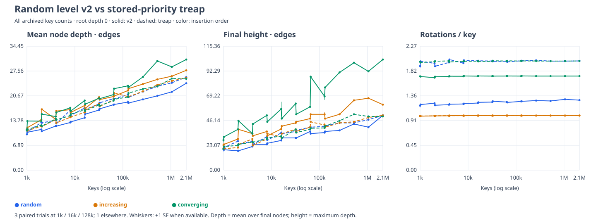

All three input families and both strategies share each metric panel. Hover points in the SVG for measurements. Archived v2 trials are reused; other trials ran in parallel. Timings are deliberately excluded.
Summary CSV · Raw trials · Provenance and configuration